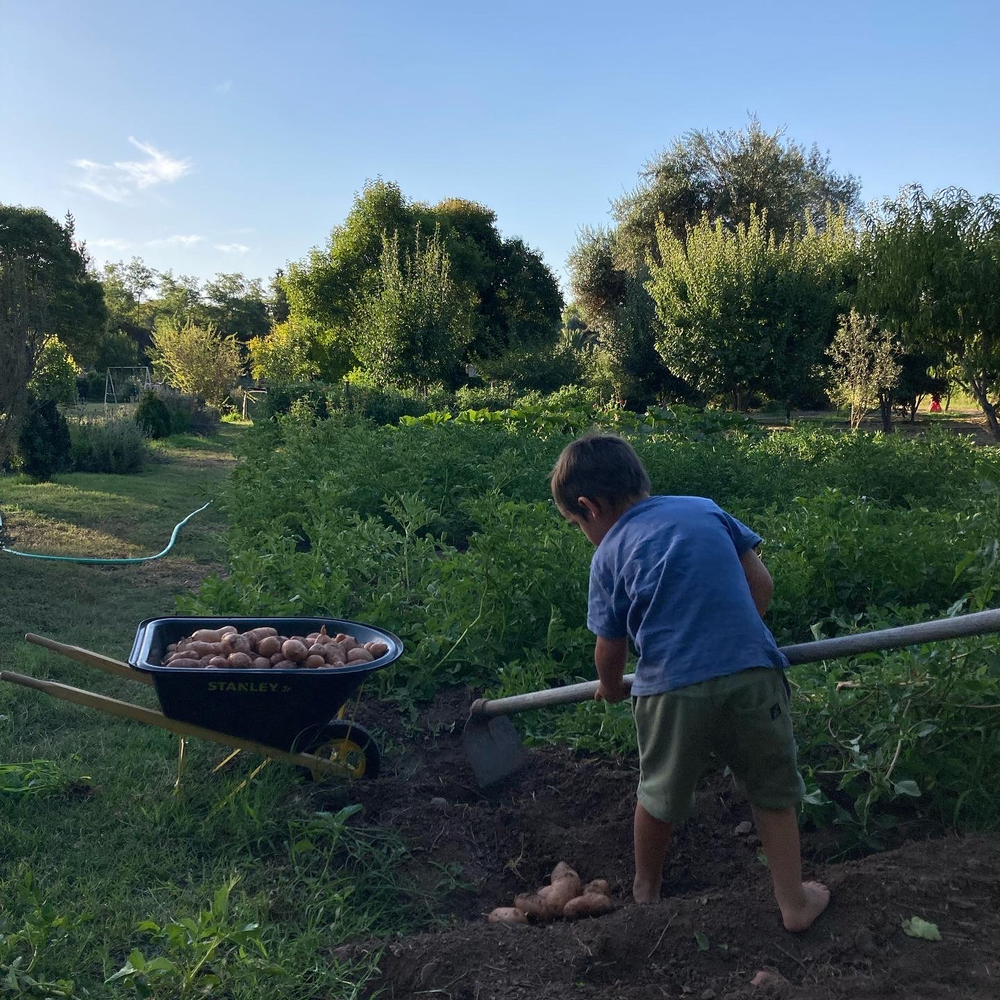

Tu refugio en el campo, sin el cacho de mantenerlo.
Abrimos nuestra parcela en Paine para un grupo de familias. Nosotros mantenemos la tierra y la infraestructura. Tú vas a descansar, cosechar y desconectar.

Cómo funciona el trato
Nosotros mantenemos
Cuidamos el huerto, podamos los árboles, cortamos el pasto y mantenemos la piscina impecable durante todo el año.
Tú llegas y descansas
Usas el quincho, el horno de barro y la piscina. Cosechas libremente lo que da la tierra según la temporada.
A solo 40 minutos
Estamos ubicados en El Vínculo, Paine. Suficientemente lejos del ruido, suficientemente cerca para ir por el día.


La sala de clases con el techo más alto del mundo.
Ponemos nuestro huerto a disposición de proyectos educativos que entienden que ensuciarse las manos y respetar los ritmos naturales es vital para aprender.

Nuestros programas de Aula Abierta
El Ciclo del Trigo
Diseñado para 3ros básicos Waldorf. Acompañamos a los niños desde arar la tierra y sembrar, hasta cosechar y hornear su propio pan.
Convivencia Escolar
Jornadas inmersivas diseñadas para sanar dinámicas de grupo, volver a la naturaleza y cultivar la empatía trabajando la tierra en equipo.

